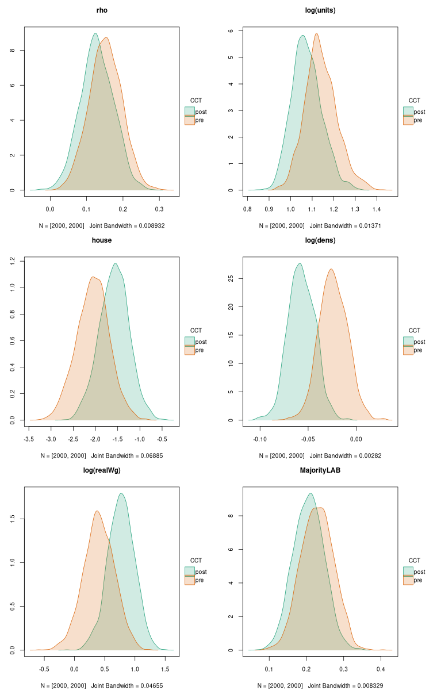

library(spdep)
lw <- nb2listw(unb, style="W")
library(spatialreg)
e <- eigenw(lw)
W <- as(lw, "CsparseMatrix")
trMat <- trW(W, type="mult")10 No orthogonality between regression and autoregression coefficients
10.1 Marginal effects in spatial econometrics
Recall that we aim to consider:
if we change x, what do we expect to happen to y.
It has emerged over time, however, that the spatial dependence in the parameter \rho_{\mathrm{Lag}} feeds back. This feedback comes from the fact that the reduced form model is {\mathbf y} = ({\mathbf I} - \rho_{\mathrm{Lag}} {\mathbf W})^{-1}{\mathbf X}{\mathbf \beta} + ({\mathbf I} - \rho_{\mathrm{Lag}} {\mathbf W})^{-1}{\mathbf \varepsilon}. {\mathbf I} is the n \times n identity matrix, and ({\mathbf I} - \rho_{\mathrm{Lag}} {\mathbf W})^{-1} is known to be dense. Expressed in terms of changes in x impacting y, the feedback runs through the global spillover ({\mathbf I} - \rho_{\mathrm{Lag}} {\mathbf W})^{-1}. These difficulties are discussed as emanating effects (Kelejian, Tavlas, and Hondroyiannis 2006), also known as impacts (LeSage and Fischer 2008; LeSage and Pace 2009; Golgher and Voss 2016), simultaneous spatial reaction function/reduced form (Anselin and Lozano-Gracia 2008) and equilibrium effects (Ward and Gleditsch 2008).
This feedback comes from the fact that, while the elements of the Hessian matrix for the ML spatial error model linking \rho_{\mathrm{Err}} and \beta are zero (\partial^2 \ell / (\partial \beta \partial \rho_{\mathrm{Err}}) = {\mathbf 0}), in the spatial lag model (and by extension in the spatial Durbin model): \partial^2 \ell / (\partial \beta \partial \rho_{\mathrm{Lag}}) \neq {\mathbf 0}. In the spatial error model, for exogenous variable r, \partial y_i / \partial x_{ir} = \beta_r and \partial y_i / \partial x_{jr} = 0 for i \neq j. In the spatial lag model, \partial y_i / \partial x_{jr} = (({\mathbf I} - \rho_{\mathrm{Lag}} {\mathbf W})^{-1} {\mathbf I} \beta_r)_{ij}, where {\mathbf I} is the n \times n identity matrix. The awkward S_r({\mathbf W}) = (({\mathbf I} - \rho_{\mathrm{Lag}} {\mathbf W})^{-1} {\mathbf I} \beta_r) matrix term needed to calculate impact measures for the lag model, and S_r({\mathbf W}) = (({\mathbf I} - \rho_{\mathrm{Lag}} {\mathbf W})^{-1} ({\mathbf I} \beta_r - {\mathbf W} \gamma_r)) for the spatial Durbin model, may be approximated using traces of powers of the spatial weights matrix as well as analytically.
The average direct impacts are represented by the sum of the diagonal elements of the matrix divided by n for each exogenous variable. The average total impacts are the sum of all matrix elements divided by n for each exogenous variable. The average indirect impacts are the differences between the direct and total impact vectors.
The development in LeSage and Pace (2009, pp. 114–115) for the SLM model and q traces (traces are sums of values on the principal diagonal) is as follows:
{\mathbf T} = [1, 0, n^{-1}tr({\mathbf W}^2), n^{-1}tr({\mathbf W}^3), \ldots, n^{-1}tr({\mathbf W}^q)]
{\mathbf g} = [1, \rho, \rho^2, \rho^3, \ldots, \rho^q]; {\mathbf G}_{ii} = g_i, i = 1, \ldots, q+1
{\mathbf P} = [\beta_1, \beta_2, \ldots, \beta_p]^T
where the intercept \beta_0 is dropped, and with {\mathbf a} a p-vector of ones:
{\mathrm {Direct}} = {\mathbf P} {\mathbf T} {\mathbf G} {\mathbf a}
{\mathrm {Total}} = {\mathbf \beta} {\mathbf g} {\mathbf a}
10.2 Trace-style impacts
trW in spatialreg can be used to generate {\mathbf T} above:
SLM_pre_maj <- lagsarlm(form_pre_maj, data=eng324, listw=lw, control=list(pre_eig=e))The samples are drawn from the fitted model using the coefficients, spatial lag coefficient \rho_{\mathrm{Lag}} and possibly other components as the mean values, and the variance-covariance matrix of coefficients, applying mvrnorm from MASS once for R draws, yielding inputs for the trace method, which is applied to each draw to give R sample direct, indirect and total impacts:
set.seed(12345)
R <- 2000
(imp_SLM_pre_maj_tr <- impacts(SLM_pre_maj, tr=trMat, R=R))Impact measures (lag, trace):
Direct Indirect Total
log(units) 0.97021645 0.166102763 1.13631922
house -1.75150349 -0.299860477 -2.05136397
log(dens) -0.02019100 -0.003456735 -0.02364774
Metroplondon 0.07432424 0.012724440 0.08704868
Metropmetrop -0.05080358 -0.008697662 -0.05950124
log(realWgPre) 0.34764203 0.059516927 0.40715896
MajorityCONS 0.03796509 0.006499690 0.04446478
MajorityLAB 0.19524091 0.033425587 0.22866650Repeating for post-CCT, we have R pre-CCT samples of \rho_{\mathrm{Lag}}, and R post-CCT samples, plus the same counts of sample impacts for the variables distinguished in Bivand and Szymanski (2000) as of importance both pre-CCT and post-CCT.
SLM_post_maj <- lagsarlm(form_post_maj, data=eng324, listw=lw, control=list(pre_eig=e))set.seed(12345)
(imp_SLM_post_maj_tr <- impacts(SLM_post_maj, tr=trMat, R=R))Impact measures (lag, trace):
Direct Indirect Total
log(units) 0.93758286 0.133550323 1.07113319
house -1.37901113 -0.196427845 -1.57543897
log(dens) -0.04950261 -0.007051205 -0.05655381
Metroplondon 0.03621620 0.005158675 0.04137488
Metropmetrop -0.02805200 -0.003995758 -0.03204776
log(realWgPst) 0.67442535 0.096065881 0.77049124
MajorityCONS -0.01960548 -0.002792626 -0.02239811
MajorityLAB 0.17957971 0.025579529 0.20515924As a graphical display may be easier to begin with, we’ll use tinyplot and assemble the samples of \rho_{\mathrm{Lag}}, and the total impact samples for the variables: logarithm of pick-up point counts, proportion of dwellings among pick-up points, logarithm of density of pick-up points per unit area, logarithm of real wages, and the categorical variable Labour majority control (compared with base value of no overall control).
pre_samp <- attr(imp_SLM_pre_maj_tr, "samples")
post_samp <- attr(imp_SLM_post_maj_tr, "samples")
pre_tot <- imp_SLM_pre_maj_tr$sres$total[, c(1:3, 6, 8)]
post_tot <- imp_SLM_post_maj_tr$sres$total[, c(1:3, 6, 8)]
tot <- as.data.frame(rbind(pre_tot, post_tot))
names(tot)[4] <- "log.realWg."
df <- data.frame(tot, rho=c(pre_samp$samples[,2], post_samp$samples[,2]), CCT=factor(c(rep("pre", times=R), rep("post", times=R)), levels=c("pre", "post")))We expect see the total impacts of the logarithm of density of pick-up points per unit area and those of the logarithm of real wages sharpen (move further from zero) as CCT leads to increased efficiency. An increase in efficiency might also be associated with moves toward zero of the other three variables. In Bivand and Szymanski (2000), we also asserted that \rho_{\mathrm{Lag}} would move towards zero as yardstick competition was replaced by competitive tendering.
library(tinyplot)
library(grid)
x11()
tinyplot(~ rho | CCT, data=df, type="density", fill="by", palette="dark2", main="rho")
gridGraphics::grid.echo()
g1 <- grid.grab()
dev.off()
x11()
tinyplot(~ log.units. | CCT, data=df, type="density", fill="by", palette="dark2", main="log(units)")
gridGraphics::grid.echo()
g2 <- grid.grab()
dev.off()
x11()
tinyplot(~ house | CCT, data=df, type="density", fill="by", palette="dark2", main="house")
gridGraphics::grid.echo()
g3 <- grid.grab()
dev.off()
x11()
tinyplot(~ log.dens. | CCT, data=df, type="density", fill="by", palette="dark2", main="log(dens)")
gridGraphics::grid.echo()
g4 <- grid.grab()
dev.off()
x11()
tinyplot(~ log.realWg. | CCT, data=df, type="density", fill="by", palette="dark2", main="log(realWg)")
gridGraphics::grid.echo()
g5 <- grid.grab()
dev.off()
x11()
tinyplot(~ MajorityLAB | CCT, data=df, type="density", fill="by", palette="dark2", main="MajorityLAB")
gridGraphics::grid.echo()
g6 <- grid.grab()
dev.off()png("Images/10_imp_pre_post_tr_fig0.png", width=760, height=1200, pointsize=10)
grid.newpage()
gridExtra::grid.arrange(g1, g2, g3, g4, g5, g6, nrow=3, ncol=2)
dev.off()
We can also use tinytable to show the estimates of \rho_{\mathrm{Lag}} and total imacts for the selected variables with their standard errors (for the impacts, standard errors estimated from the samples):
library(tinytable)
sum_imp_SLM_pre_maj_tr <- summary(imp_SLM_pre_maj_tr, short=TRUE, zstats=TRUE)
sum_imp_SLM_post_maj_tr <- summary(imp_SLM_post_maj_tr, short=TRUE, zstats=TRUE)
tf <- data.frame(variable=c(attr(imp_SLM_pre_maj_tr, "bnames")[c(1:3, 6, 8)], "rho"),
pre=c(sum_imp_SLM_pre_maj_tr$res$total[c(1:3, 6, 8)], SLM_pre_maj$rho),
pre_se=c(sum_imp_SLM_pre_maj_tr$semat[c(1:3, 6, 8), 3], SLM_pre_maj$rho.se),
post=c(sum_imp_SLM_post_maj_tr$res$total[c(1:3, 6, 8)], SLM_post_maj$rho),
post_se=c(sum_imp_SLM_post_maj_tr$semat[c(1:3, 6, 8), 3], SLM_post_maj$rho.se))
tf$variable[4] <- "log(realWg)"
tt(tf, digits=4)| variable | pre | pre_se | post | post_se |
|---|---|---|---|---|
| log(units) | 1.13632 | 0.07465 | 1.07113 | 0.06949 |
| house | -2.05136 | 0.36659 | -1.57544 | 0.33305 |
| log(dens) | -0.02365 | 0.01477 | -0.05655 | 0.01389 |
| log(realWg) | 0.40716 | 0.25623 | 0.77049 | 0.21888 |
| MajorityLAB | 0.22867 | 0.04353 | 0.20516 | 0.04111 |
| rho | 0.1504 | 0.04404 | 0.12778 | 0.04532 |
10.3 Bayesian marginal effects
Because MCMC in any case draws samples, the use of fitted coefficients and their covariance matrix for posterior sampling to carry out inference on the models is unnecessary, and the same trace method can be used as with other estimation methods for constructing the sample impacts. Here we thin the samples to reduce the time needed for plotting the density plots:
set.seed(12345)
SLM_pre_maj_bayes <- spBreg_lag(form_pre_maj, data=eng324, listw=lw, control=list(ndraw=22000L, nomit=2000L, thin=10L))set.seed(12345)
SLM_post_maj_bayes <- spBreg_lag(form_post_maj, data=eng324, listw=lw, control=list(ndraw=22000L, nomit=2000L, thin=10L))As can be seen, no R is needed to give the number of samples to draw, because they are already at hand. If we wished to modify the priors of the Bayesian models, we could also explore the consequences for the impacts - here uninformative priors have been used, yielding results very like those of maximum likelihood:
sum_imp_pre <- summary(impacts(SLM_pre_maj_bayes, tr=trMat))
sum_imp_post <- summary(impacts(SLM_post_maj_bayes, tr=trMat))pre_tot <- sum_imp_pre$sres$total[, c(1:3, 6, 8)]
post_tot <- sum_imp_post$sres$total[, c(1:3, 6, 8)]
R <- nrow(pre_tot)
tot <- as.data.frame(rbind(pre_tot, post_tot))
names(tot)[4] <- "log.realWg."
bdf <- data.frame(tot, rho=c(c(SLM_pre_maj_bayes[, "rho"]), c(SLM_post_maj_bayes[, "rho"])), CCT=factor(c(rep("pre", times=R), rep("post", times=R)), levels=c("pre", "post")))library(tinyplot)
x11()
tinyplot(~ rho | CCT, data=bdf, type="density", fill="by", palette="dark2", main="rho")
gridGraphics::grid.echo()
g1 <- grid.grab()
dev.off()
x11()
tinyplot(~ log.units. | CCT, data=bdf, type="density", fill="by", palette="dark2", main="log(units)")
gridGraphics::grid.echo()
g2 <- grid.grab()
dev.off()
x11()
tinyplot(~ house | CCT, data=bdf, type="density", fill="by", palette="dark2", main="house")
gridGraphics::grid.echo()
g3 <- grid.grab()
dev.off()
x11()
tinyplot(~ log.dens. | CCT, data=bdf, type="density", fill="by", palette="dark2", main="log(dens)")
gridGraphics::grid.echo()
g4 <- grid.grab()
dev.off()
x11()
tinyplot(~ log.realWg. | CCT, data=bdf, type="density", fill="by", palette="dark2", main="log(realWg)")
gridGraphics::grid.echo()
g5 <- grid.grab()
dev.off()
x11()
tinyplot(~ MajorityLAB | CCT, data=bdf, type="density", fill="by", palette="dark2", main="MajorityLAB")
gridGraphics::grid.echo()
g6 <- grid.grab()
dev.off()png("Images/10_bayes_pre_post_tr_fig0.png", width=760, height=1200, pointsize=10)
grid.newpage()
gridExtra::grid.arrange(g1, g2, g3, g4, g5, g6, nrow=3, ncol=2)
dev.off()
We could also replicate the outcomes in tabular form.
10.4 GMM marginal effects
Piras and Postiglione (2022) propose the use of eigenvalues of the spatial weights matrix to calculate the direct, indirect and total impacts, rather than the use of traces, which are necessarily approximate as the power series is truncated. However, an argument for GMM was that it avoided the computation of eigenvalues of the spatial weights matrix, which cease to be numerically stable at large n using standard or extended precision (n up to 10,000 is fine). For larger n, the trace method remains viable.
The eigenvalue method can of course also be used to calculate impacts from samples for inferential purposes, but so far only the impacts themselves are available for models fitted by maximum likelihood:
tfe0 <- data.frame(variable=c(names(coef(SLM_pre_maj))[3:10], "rho"), pre=c(impacts(SLM_pre_maj, evalues=e)$total, SLM_pre_maj$rho), post=c(impacts(SLM_post_maj, evalues=e)$total, SLM_post_maj$rho))
tfe0$variable[6] <- "log(realWg)"
tt(tfe0, digits=4) | variable | pre | post |
|---|---|---|
| log(units) | 1.13632 | 1.07113 |
| house | -2.05136 | -1.57544 |
| log(dens) | -0.02365 | -0.05655 |
| Metroplondon | 0.08705 | 0.04137 |
| Metropmetrop | -0.0595 | -0.03205 |
| log(realWg) | 0.40716 | 0.77049 |
| MajorityCONS | 0.04446 | -0.0224 |
| MajorityLAB | 0.22867 | 0.20516 |
| rho | 0.1504 | 0.12778 |
Let us fit the SLM pre-CCT and post-CCT models with GMM:
library(sphet)
Attaching package: 'sphet'The following object is masked from 'package:spatialreg':
impactsspreg_pre_maj <- spreg(form_pre_maj, data=eng324, listw=lw, model="lag")
spreg_post_maj <- spreg(form_post_maj, data=eng324, listw=lw, model="lag")and continue to calculate the impacts and their standard errors using the Kelejian and Piras formula:
imp_spreg_pre_maj <- impacts(spreg_pre_maj, evalues=e, KPformula=TRUE, prt=FALSE)
imp_spreg_post_maj <- impacts(spreg_post_maj, evalues=e, KPformula=TRUE, prt=FALSE)etf <- data.frame(variable=c(rownames(imp_spreg_pre_maj[[1]])[c(1:3, 6, 8)], "rho"),
pre=c(imp_spreg_pre_maj[[1]][c(1:3, 6, 8), 3], c(coef(spreg_pre_maj)[10])),
pre_se=c(imp_spreg_pre_maj[[2]][c(1:3, 6, 8), 3], sqrt(diag(spreg_pre_maj$var))[10]),
post=c(imp_spreg_post_maj[[1]][c(1:3, 6, 8), 3], c(coef(spreg_post_maj)[10])),
post_se=c(imp_spreg_post_maj[[2]][c(1:3, 6, 8), 3], sqrt(diag(spreg_post_maj$var))[10]))
etf$variable[4] <- "log(realWg)"
tt(etf, digits=4)| variable | pre | pre_se | post | post_se |
|---|---|---|---|---|
| log(units) | 1.19098 | 0.09537 | 1.0755 | 0.08659 |
| house | -2.15052 | 0.41584 | -1.58078 | 0.35657 |
| log(dens) | -0.02608 | 0.01599 | -0.05683 | 0.0146 |
| log(realWg) | 0.38525 | 0.27094 | 0.76965 | 0.22409 |
| MajorityLAB | 0.23452 | 0.04707 | 0.2056 | 0.04185 |
| rho | 0.18698 | 0.05349 | 0.13111 | 0.05787 |
Although we could generate “density” plots using the standard errors, a more parsimonious approach might be a pair of coefficient plots:
library(tinyplot)
level <- 0.95
a <- (1 - level)/2
a <- c(a, 1 - a)
fac <- qt(a, 324)
edf_pre <- c(imp_spreg_pre_maj[[1]][c(1:3, 6, 8), 3], c(coef(spreg_pre_maj)[10])) + c(imp_spreg_pre_maj[[2]][c(1:3, 6, 8), 3], sqrt(diag(spreg_pre_maj$var))[10]) %o% fac
edf_pre <- data.frame(estimate=c(imp_spreg_pre_maj[[1]][c(1:3, 6, 8), 3], c(coef(spreg_pre_maj)[10])), ci_low=edf_pre[,1], ci_high=edf_pre[,2], vars=rownames(edf_pre))
edf_pre$vars[4] <- "log(realWg)"
edf_post <- c(imp_spreg_post_maj[[1]][c(1:3, 6, 8), 3], c(coef(spreg_post_maj)[10])) + c(imp_spreg_post_maj[[2]][c(1:3, 6, 8), 3], sqrt(diag(spreg_post_maj$var))[10]) %o% fac
edf_post <- data.frame(estimate=c(imp_spreg_post_maj[[1]][c(1:3, 6, 8), 3], c(coef(spreg_post_maj)[10])), ci_low=edf_post[,1], ci_high=edf_post[,2], vars=rownames(edf_post))
edf_post$vars[4] <- "log(realWg)"
opar <- par(mfrow=c(1,2), mar=c(7, 4, 4, 2)+0.1)
with(edf_pre, tinyplot(x=vars, y=estimate, ymin=ci_low, ymax=ci_high, type="pointrange", col="blue4", pch=16, cex=2, main="pre-CCT", ylim=c(-2.9686, 1.3786), grid=TRUE, las=3))
with(edf_post, tinyplot(x=vars, y=estimate, ymin=ci_low, ymax=ci_high, type="pointrange", col="red4", pch=16, cex=2, main="post-CCT", ylim=c(-2.9686, 1.3786), grid=TRUE, las=3))par(opar)